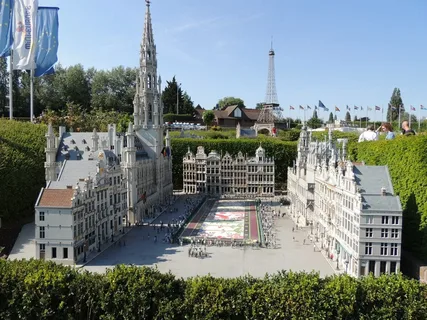
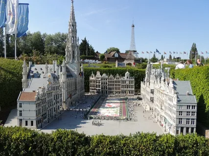
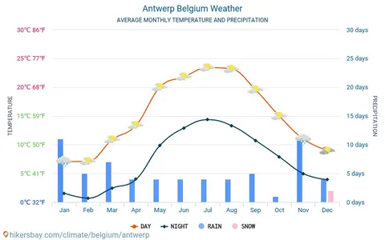
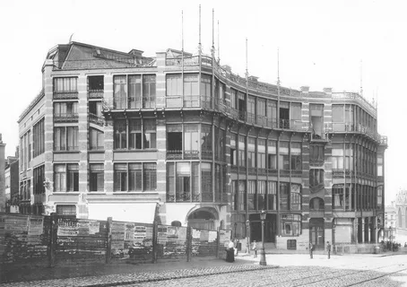
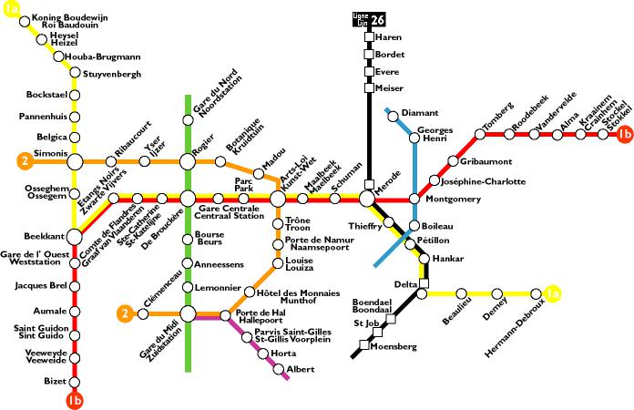
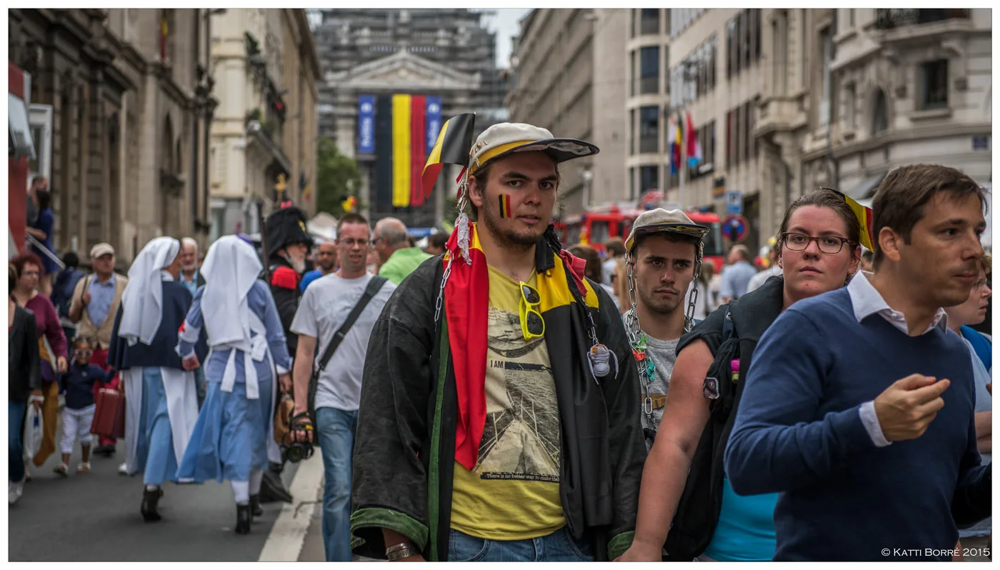
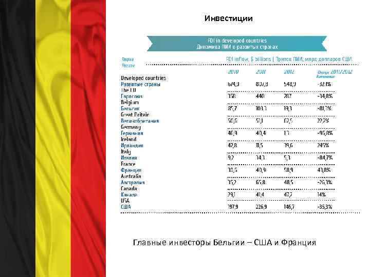
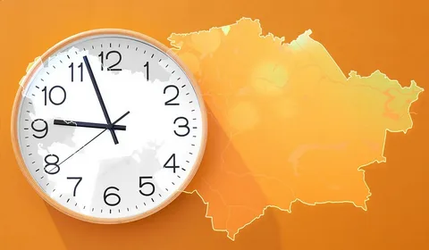

Брюссель Еуропаның мәдени, саяси және экономикалық орталығы ретінде танымал.Брюссель (нидер. Brussel [ˈbrʏsəl], фр. Bruxelles [bʁyˈsɛl]) — Бельгияның ең ірі қаласы және астанасы, әрі Еуропа одағының әкімшілік орталығы. Брюссель 10 ғасырдағы Чарлмагненің немересі негізін қалаған бекініс қалашығынан миллионнан астам тұрғыны бар ірі қалаға айналды. Брюссель-Астаналық аймағының Брюссель қаласы деп аталатын (176,545 тұрғыны бар) мағынаны, Брюссель-Астаналық Аймақ (2017 жыл 1 ақпанына сәйкес 1,067,162 тұрғыны бар) мағынасын, немесе, Брюссель метрополитен (астаналық) аймағын (2,100,000-ден 2,700,000-ге дейін тұрғыны бар) білдіруі мүмкін. Брюссель іс жүзінде ЕуроОдақ астанасы болып есептеледі.
Брюсель – Бельгияның астанасы және Еуропалық Одақтың (ЕО) бейресми орталығы. Қала Бельгияның ең ірі әрі маңызды мәдени, саяси және экономикалық орталығы болып саналады. Оның тарихы, сәулеті және заманауи саяси рөлі ерекше мәнге ие.
Географиясы мен халқы Брюсель Бельгияның орталығында орналасқан және 19 коммунаны қамтитын Брюссель астаналық аймағының орталығы болып табылады. Қала халқы шамамен 1,2 миллион адамды құрайды. Брюссельде француз және голланд тілдері ресми болып табылады, бірақ халықтың көпшілігі француз тілінде сөйлейді. Сонымен қатар, ағылшын тілі де кеңінен таралған.
Тарихы Брюссель 10 ғасырда құрылып, орта ғасырларда маңызды сауда орталығы болды. 1830 жылы Бельгия тәуелсіздік алғаннан кейін Брюссель жаңа мемлекеттің астанасына айналды. 20 ға… Қала мәдениеті Брюссель шоколад пен вафлиімен танымал, бұл тағамдар әлемге Бельгияның гастрономиялық ерекшелігі ретінде танылды. Қалада әртүрлі ұлттар мен мәдениеттердің өкілдері тұрады, бұл оның көпмәдениеттілігін айқындайды.
Туристер үшін қызықты жерлер Брюссельдің басты көрнекті орындарына Гран-Плас алаңы, Атомиум, Писающий мальчик және Еуропа Парламентінің ғимараты жатады. Қалада көптеген саябақтар мен мұражайлар бар, соның ішінде комикстерге арналған Бельгия комикстер мұражайы ерекше танымал. Брюссель – саяхатшылар мен тарих әуесқойлары үшін керемет орын, әрі Еуропаның экономикалық және саяси өмірінің маңызды бөлігі Bilingual signs in Brussels Manneken Pis Брусселдегі ең танымал ескерткіш Ресми түрде Брюссель екі тілді болып есептеледі: француз және голлан тілді.
 Аттың шығу тегі
Қала бұл атауды жер бедері батпақты болғандықтан алды. Ол осы аймақта басым. Бруокселла латын тілінен аударғанда «батпақтағы қоныс» дегенді білдіреді. Бұл көне қаланың басты ерекшелігі - оның пішіні біркелкі емес. Қалыптасқан оғаш геометриялық фигура үш бөлікке бөлінген.

Аттың шығу тегі
Қала бұл атауды жер бедері батпақты болғандықтан алды. Ол осы аймақта басым. Бруокселла латын тілінен аударғанда «батпақтағы қоныс» дегенді білдіреді. Бұл көне қаланың басты ерекшелігі - оның пішіні біркелкі емес. Қалыптасқан оғаш геометриялық фигура үш бөлікке бөлінген.

Климат Брюссель - қоңыржай теңіз климаты бар қала, өйткені елді мекен Солтүстік теңізге жақын орналасқан. Мұнда әрқашан қалыпты жылы және ылғалды. Жазғы маусымда температура 20 oC-тан жоғары көтерілмейді, ал қыста белгіні сирек көруге болады.нөлден төмен. Ең ыстық айлар шілде мен тамыз, ал ең суық айлар қаңтар. Климаттың бұл түрі жауын-шашынның айтарлықтай мөлшерімен сипатталады: жылына орта есеппен 850 мм-ге деqsy 
Брюссель тарихы Аңызда Брюссель VI ғасырда пайда болған ауыл, ал оның негізін қалаушы Әулие Гагерик деп аталады. Бірақ әзірге бұл мифтің ресми растауы табылған жоқ. Бруокселла туралы алғашқы тарихи құжат Ұлы Отто жазған 996 жылы жазылған жарғы болып табылады. 977-979 жж. Төменгі Лотарингия герцогы Карл I бірінші қалалық бекініс қабырғасы мен капелла құрылысын бастады. Бұл Брюссель тарихының басы болды. Мұндай көне қаланың бай тарихи мұрасы бар және көптеген қызықты деректермен әйгілі болуы қисынды. Дамудың бастапқы кезеңінен кейін оның аумағында бельгиялық меценат болып саналатын Әулие Гудула атындағы собор салынды. 11 ғасырдың басында қаланың бірінші қабырғасы тұрғызылды.
Қаланың орта ғасырлардағы дамуы 1430 жылдан бастап Брюссель қаласы қарқынды дами бастады. Бұл әбден түсінікті. Ол кезде ол герцог Филипп III (Бургундия) қамқорлығында болды. Бұл кезеңде ратушалар мен үйлер белсенді түрде салынды, экономика дамып, өсті, бельгиялықтардың мәдени рухы көтерілді. Филипптің қызы Рим империясының мұрагеріне (Максимилиан I) тұрмысқа шыққаннан кейін Брюссель аумағы Габсбургтердің құрамына кірді. Ал қазірдің өзінде 1531 жылы болашақ астанаБельгия Бургундияға оралды. Сол кездегі билеуші Карл V қайтыс болуы және Филипп II-нің билікке келуі жаңа билеушіге наразылықтың үлкен толқынына, көтерілістерге және экономиканың құлдырауына әкелді.  Брюссель метросы Брюссель метросы Соғыстан кейінгі жылдар 1648 жыл көптен күткен 30 жылға созылған соғыстың аяқталуын әкелді, оның қорытындысы Вестфалия бейбітшілігі болды, оған сәйкес Брюссель аумағы Испанияға заңды түрде берілді. Наразылық мұнымен бітпеді, испандар мен француздар дәмді және бай жерлер үшін күресе бастады. Осы соғыстар кезінде Брюссель халқы бірнеше рет зардап шекті, себебі қаланың орталық аудандары атқыланды.  Тәуелсіздік 1789 жылдан бастап жергілікті протестанттар өздеріне тәуелсіздік алуды талап ете бастады. Барлық көтеріліс пен құлдырау 1815 жылы Наполеон мен оның әскері Ватерлоо шайқасында сәтсіздікке ұшыраған кезде аяқталды. Ал 1830 жыл Брюссель үшін көптен күткен еркіндік пен тәуелсіздікпен есте қалды. Бұл шешім Лондон конференциясында қабылданды. Леопольд I Бельгия корольдігінің бірінші королі болды. Мақсатқа қол жеткізгеннен кейін бірнеше ғасыр өткен соң экономика қайтадан өрлеуге ұшырап, шетелдік қоныс аударушылардың есебінен халық саны күн сайын артты. Дәл осы тарихи кезеңде Триумфалдық арка және Әділет сарайы. Брюссель – болашақ Еуропалық Одақтың штаб-пәтері мен НАТО кеңсесі орналасқан қала. Халық Урбанизациядан кейінгі кезеңде жергілікті тұрғындардың саны 100 000-нан 200 000-ға дейін екі есе өсті. Брюссель тамаша нәтиже көрсетудетуу (халықтың табиғи өсімі). Әйел мен еркек жартысының динамикасы үйлесімді - дерлік 50:50%. 20 ғасырдың басынан бастап Брюссельдің франкофондар деп аталатын бүкіл байырғы халқы қаланың ұйықтайтын аудандарына және жақын маңдағы аудандарға көшті. Олардың орнына халықаралық мигранттар келеді. Олардың арасында Конго мен Түркияның, сондай-ақ Марокконың өкілдері болды. Бірақ сонда да халықтың негізгі бөлігі француздар мен голландтар болып қала берді, бір-бірімен үнемі соғысып жүрді. Дәл осы себепті ресми түрде мойындалған жалғыз екі тілді аймақ - бұл мегаполис және Брюссельдің өзі. Француз тілі голланд тіліне толығымен тең. Мұнда жаңа қоныстанғандардың диалектілері де жиі кездеседі. Сенімге келетін болсақ, халықтың көпшілігі католицизмді немесе протестантизмді ұстанады. Шетелдіктердің көптігіне байланысты ислам немесе иудаизмді ұнататын тұрғындарды да кездестіруге болады.  Экономика және көлік жүйесі Брюссель – экономикалық дамыған орталық. Айта кетерлігі, мұндағы өмір сүру деңгейі басқа қалаларға қарағанда әлдеқайда жақсы. Негізгі табыс туристік бизнес пен қызмет көрсету секторынан, сонымен қатар гастрономиядан (мейрамханалар саны 2000-нан асады) түседі. Брюссельде машина жасау саласы жақсы дамыған, несие және қаржы институттары да табысты жұмыс істеуде. Ал ЖІӨ бойынша ол барлық еуропалық қалалар арасында үшінші орында. Көлік жүйесіне келетін болсақ, ол айтарлықтай жоғары деңгейде дамыған. Жақсы жарықтандырылған тегіс автомобиль жолдары - сыртқы және жер асты - барлық стандарттарға сәйкес жабдықталған. Брюссель метросы -тұрғындар үшін «өмір желісі». Көліктердің көптігіне байланысты жерасты жолдарын салу қажетті шараға айналды. Жалпы, қалада бір тариф бойынша жолаушыларға қызмет көрсететін 800-ден сәл астам такси компаниясы бар. Көбінесе олардың көліктері ақ немесе қара түске боялады. Олар сондай-ақ Брюссельдің басты символы - сары иристі бейнелейді. Ақ дойбы және қызыл жазу бар. Жалпы, қалада екі орталық әуежай жұмыс істейді - Завентем және Шарлеруа. Ал Бельгия астанасының аумағында ең үлкен порт орналасқан. Мұнда халықаралық теміржол жүйесі де жақсы дамыған. Ең үлкен станциялар Солтүстік, Оңтүстік және Орталық.  Брюссельдегі уақыт Брюссельдегі уақыт Брюссель метросы 4 жолдан тұрады және әрбір станция шамамен 600-700 метр қашықтықта орналасқан. Он сегіз жерүсті трамвай желісі мен 3 жерасты автобусы қаланың айналасында да, оның сыртында да, қала маңындағы аудандарда жүреді. Барлық көліктер тек 00:30-ға дейін жұмыс істейді. Ал түнгі маршруттар тек демалыс күндері және қымбатырақ бағамен жұмыс істейді.  Брюссель тілі Брюссель – мәдени орталық. Мұндағы өмір көп қырлы және алуан түрлі. Жоғарыда аталған көрнекті орындардан басқа, негізгі еуропалық сәулет құрылымдарының миниатюралары бар саябақ, биіктігі 100 метрден асатын алып темір хрусталь Атомиум, қалалық ғимараттар мен үйлердегі комикс кейіпкерлерінің суреттері, сондай-ақ Өнер тауы ерекше. танымал. Көптеген мұражайлар, саябақтар, концерттік бағдарламалар мен түрлі тағамдары бар мейрамханалар әрбір туристке Брюссельдегі демалыс кезінде ұмытылмас бос уақыт өткізуге мүмкіндік береді. Брюссель – Бельгияның және бүкіл Еуропалық Одақтың астанасы Брюссель - Бельгияның ең үлкен қаласы. Қай елдің астанасы Еуропалық Одақтың саяси өмірінің символы бола алады деген сұраққа жауап беру қиын. Сонымен қатар, қаланың он бірінші ғасырдан бастау алатын бай тарихы бар